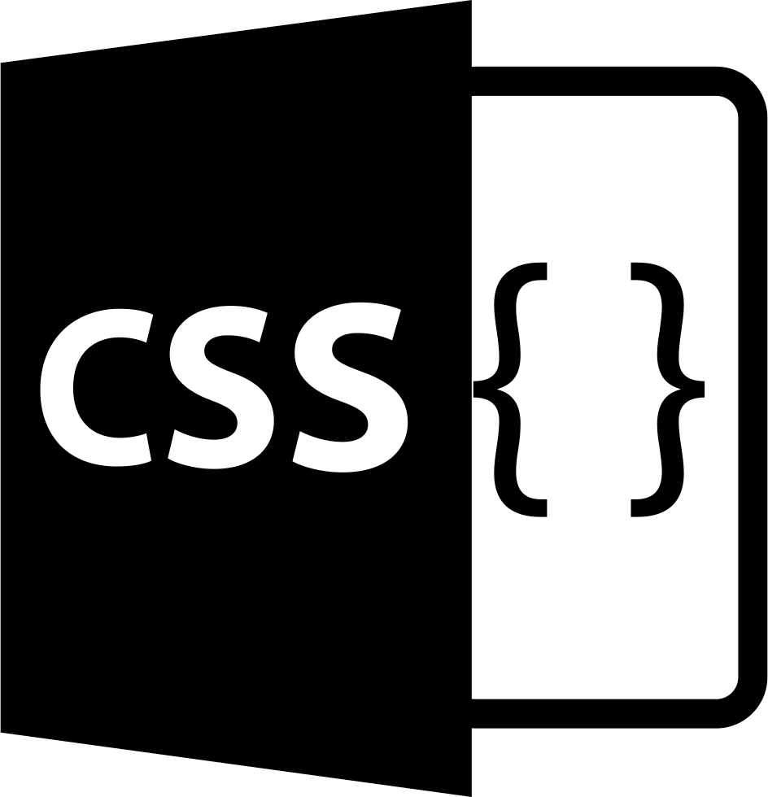
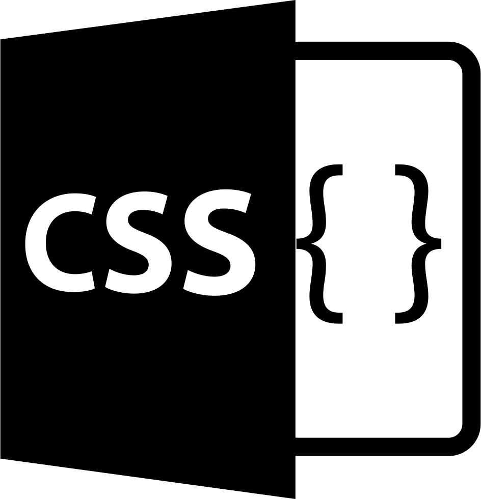

Sobre mí 😁
Actualmente me estoy formando como desarrollador web. Trabajo con HTML, CSS y buenas prácticas de accesibilidad. Disfruto resolver problemas y optimizar la experiencia del usuario en cada proyecto. Me interesa el diseño limpio, el aprendizaje constante y la creación de soluciones prácticas desde Salto, Uruguay.
Proyectos recientes 🚀
- Formulario accesible: Estructura semántica y etiquetas correctas para facilitar el uso.
- Diseño limpio: Interfaz intuitiva usando CSS puro.
- Ejercicios de selectores: Aplicación de estilos dinámicos y específicos.
- Portafolio simple: Página web personal con diseño limpio y responsive.
Habilidades principales
HTML5
CSS3
JavaScript
Pascal
Excel